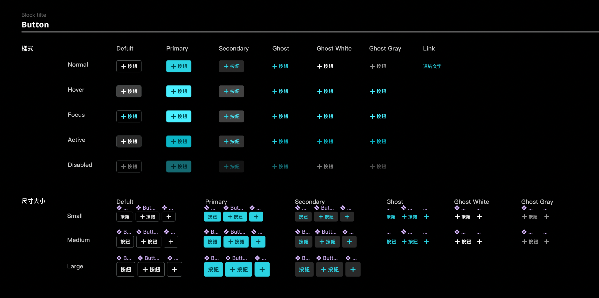
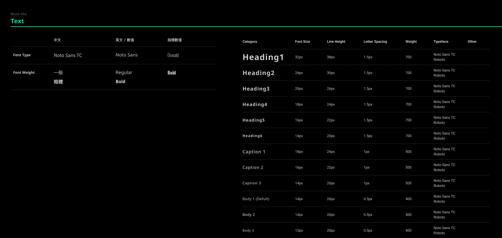
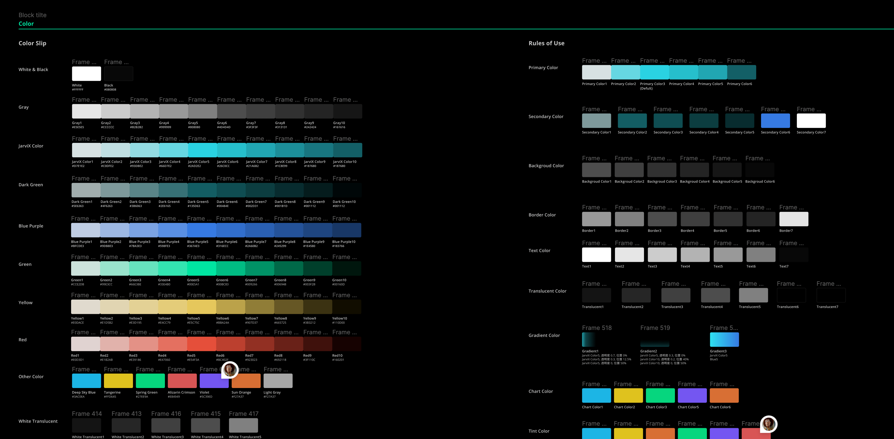
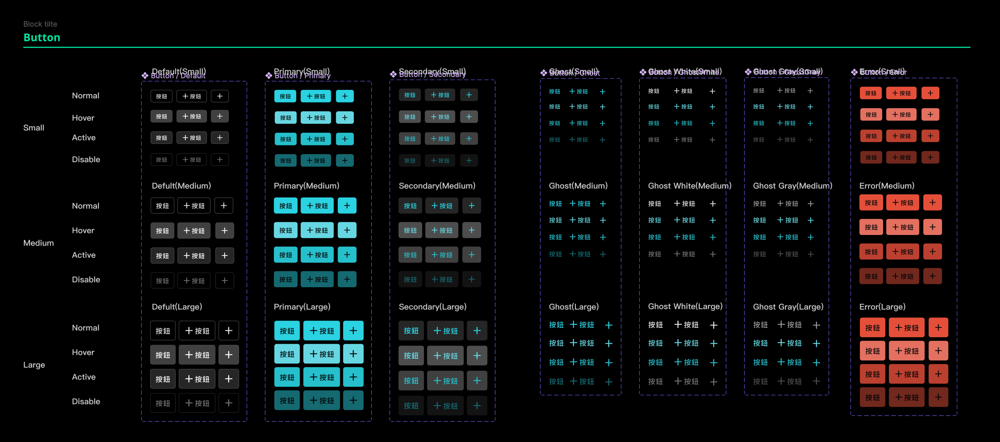
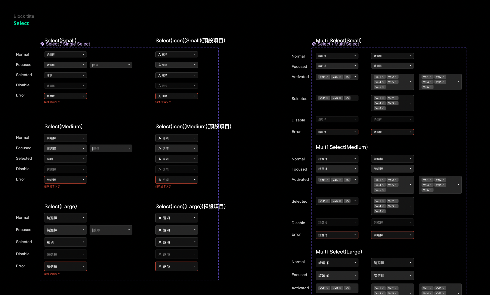

產品名稱：JarviX Guideline
擔任角色：UI / UX Designer
負責內容：統整元件類型、列出元件完整狀態、標準化方式建立元件、維護與調整、溝通元件庫實作。
1. 概要說明
產品處在初期快速迭代的過程時，原本維護的 Style Guideline 內容無法繼續跟上功能開發的速度，以致於後續的新 UI 設計稿上開始出現差異，而前端實作的 UI 畫面也正發生同樣的狀況。

Guideline (舊)
2. 定義問題
- 元件的狀態樣式沒有定義完全，以至於設計稿在使用元件時，需要尋找其他相似 UI 元件並複製狀態樣式。
- 整體維運更新速度較慢，新的元件都不再更新到當中。
- 設計與前端工程在元件上的呈現認知有落差，卻無法有共通的語言。
- 前端工程程式沒有模組化，雖然開發速度快但後續維運困難，並且有諸多使用體驗上的差異。
設計挑戰
- 採用原子設計概念，從最小元素開始定義，例如：文字、顏色，但不容易將所有使用情況都考慮周全，組合的過程才會發現缺少的部分，需要反覆修正。
- 元件在群組分類方式，需要在標準化和易用性之間抉擇。
- 設計與前端工程在元件的應用想法不一致。
3. 設計目標
(1) 製作效率提升
- 提升 Style Guideline 內容的完整性，例如：完整的元件狀態與各種變化，減少溝通成本。
- 提高元件組合的彈性，減少相似元件重複製作的狀況。
- 前端工程依照 Guideline 建立元件庫，減少實作認知上的差異。
(2) 降低協作難度
- 前端工程依照 Guideline 內容建立模組化的元件庫，減少不同工程師在實作上的差異。
- 透過 Guideline 與元件庫的關係，讓設計與前端工程有通的語言。
4. 設計結果

文字定義 (新)
細部說明
- 定義基礎中文、英文和特殊字體。
- 規劃不同使用情況的文字樣式。

顏色定義 (新)
細部說明
- 第一層定義基礎色票，以利於深色、淺色版本可分別提取顏色。
- 第二層定義應用層面，明確的應用分類讓使用起來更直覺。

按鈕定義 (新)
細部說明
- 定義不同風格樣式，標準化狀態呈現，提升元件使用的靈活度。
- 不同尺寸設計，可讓排版佈局時上的空間應用更彈性。

輸入元件定義 (新)
細部說明
- 定義多種格式及狀態變化呈現，方便應用在不同情境需求當中。